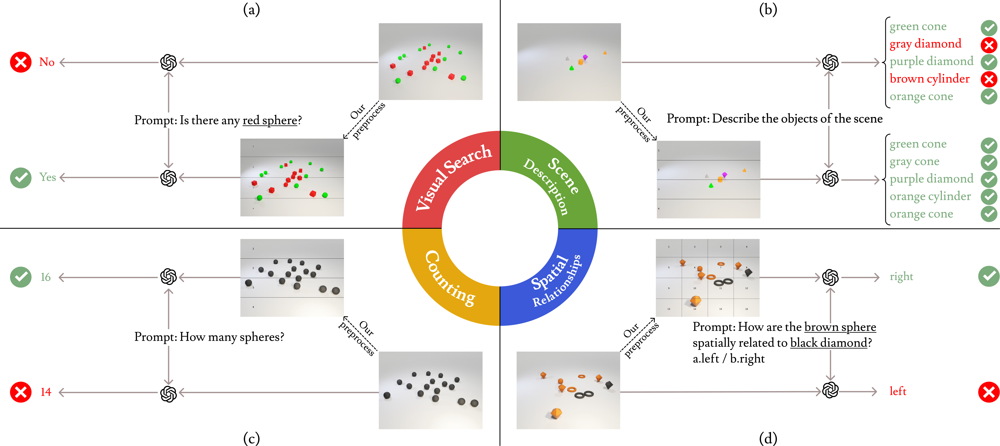

Visual Structures Help Visual Reasoning: Addressing the Binding Problem in VLMs
NeurIPS 2025
Despite progress in Vision-Language Models (VLMs), their capacity for visual reasoning is often limited by the binding problem: the failure to reliably associate perceptual features with their correct visual referents. This limitation underlies persistent errors in tasks such as counting, visual search, scene description, and spatial relationship understanding. A key factor is that current VLMs process visual features largely in parallel, lacking mechanisms for spatially grounded, serial attention.
This paper introduces VISER (Visual Input Structure for Enhanced Reasoning), a simple yet effective intervention: augmenting visual inputs with low-level spatial structures and pairing this with a textual prompt that encourages sequential, spatially aware parsing. We empirically demonstrate substantial performance improvements across core visual reasoning tasks. Specifically, VISER improves GPT-4o visual search accuracy by 25.00%, increases counting accuracy by 26.83%, reduces edit distance error in scene description by 0.32, and enhances performance on spatial relationship tasks by 9.50% on a 2D synthetic dataset.
Furthermore, we find that the visual modification is essential for these gains; purely textual strategies, including Chain-of-Thought prompting, are insufficient and can even degrade performance. VISER enhances binding using only a single-query inference, underscoring the importance of visual input design over purely linguistically based approaches. These findings suggest that low-level visual structuring is a powerful and underexplored direction for improving compositional visual reasoning and could serve as a general strategy for enhancing VLM performance on spatially grounded tasks.
@article{izadi2025visual,
title = {Visual Structures Help Visual Reasoning: Addressing the Binding Problem in VLMs},
author = {Izadi, Amirmohammad and Banayeeanzade, Mohammad Ali and Askari, Fatemeh and Rahimiakbar, Ali and Vahedi, Mohammad Mahdi and Hasani, Hosein and Soleymani Baghshah, Mahdieh},
journal = {arXiv preprint arXiv:2506.22146},
year = {2025}
}